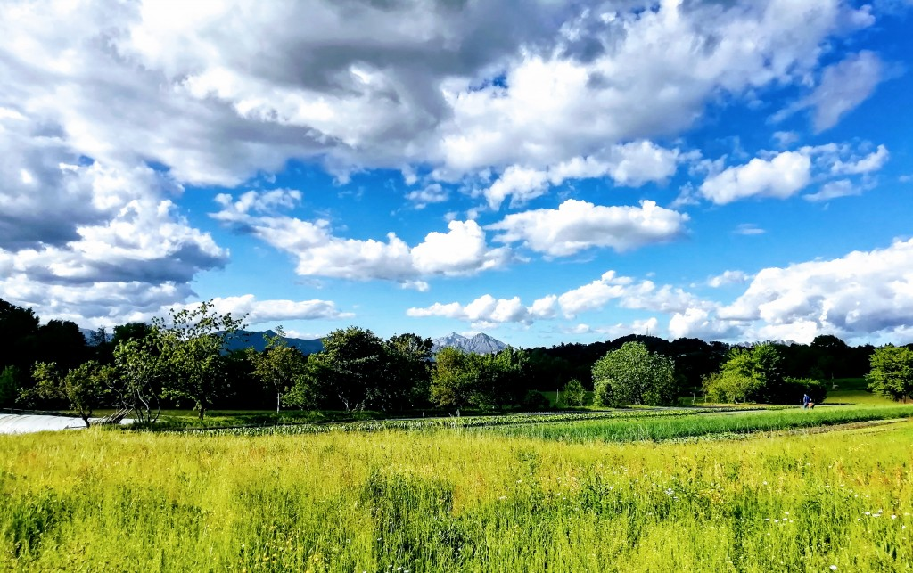

La Cascina Rampina sta crescendo: abbiamo preso nuovi terreni in affitto da coltivare, che ora sono in conversione al biologico.
Anche se questi terreni erano incolti o a prato, la normativa dell’agricoltura biologica richiede due anni di conversione prima di dare un prodotto certificato bio.
Per cui per trasparenza nei confronti dei nostri clienti comunichiamo che per ora i prodotti che trovate in vendita non sono biologici. E’ per noi impossibile separare il raccolto dei terreni biologici da anni da quello dei nuovi campi in conversione.
Come sempre coltiviamo senza l’uso di diserbanti e prodotti chimici, ci prendiamo cura della fertilità della terra con concimi organici, rispettiamo l’uomo, la natura e gli animali che alleviamo. Rivendiamo prodotti solo di aziende agricole che condividono il nostro metodo produttivo.
